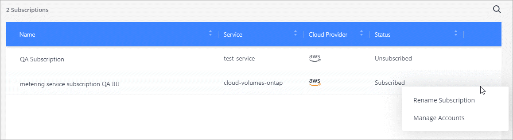

要求變更文件
要求變更文件 編輯此頁面
編輯此頁面 瞭解如何作出貢獻
瞭解如何作出貢獻管理您的NetApp帳戶
"執行初始設定之後"，您可以稍後管理使用者、服務帳戶、工作區、連接器及訂閱，以管理帳戶設定。
使用Tenancy API管理您的帳戶
如果您想要透過傳送API要求來管理帳戶設定、則必須使用_Tenancy API。此API與Cloud Manager API不同、您可用來建立及管理Cloud Volumes ONTAP 各種運作環境。
建立及管理使用者
您帳戶中的使用者可以存取帳戶工作區中的管理資源。
新增使用者
將Cloud Central使用者與NetApp帳戶建立關聯、讓這些使用者可以在Cloud Manager中建立及管理工作環境。
-
如果使用者尚未這麼做、請要求使用者前往 "NetApp Cloud Central" 並註冊。
-
從 Cloud Manager 頂端、按一下「 * Account * （帳戶 * ）」下拉式清單。

-
按一下目前選取帳戶旁的 * 管理帳戶 * 。
-
在「成員」索引標籤中、按一下「關聯使用者」。
-
輸入使用者的電子郵件地址、然後為使用者選取角色：
-
* 客戶管理 * ：可在 Cloud Manager 中執行任何動作。
-
* 工作區管理 * ：可在指派的工作區中建立及管理資源。
-
法規遵循檢視器：只能檢視Cloud Data Sense法規遵循資訊、並針對有權存取的工作區產生報告。
-
《管理員》：可以使用「支援服務」來建立應用程式一致的備份、並使用這些備份來還原資料。SnapCenter SnapCenter_此服務目前為試用版。_
-
-
如果您選取「工作區管理」或「法規遵循檢視器」、請選取一個或多個工作區以與該使用者建立關聯。

-
按一下「 * 經銷 * 」。
使用者應收到 NetApp Cloud Central 寄送的電子郵件、標題為「 Account Association （客戶關聯）」。 電子郵件中包含存取 Cloud Manager 所需的資訊。
移除使用者
取消使用者關聯後、使用者便無法再存取NetApp帳戶中的資源。
-
從 Cloud Manager 頂端、按一下 * Account* 下拉式清單、然後按一下 * Manage Account* 。
-
在「成員」索引標籤中、按一下對應使用者列中的動作功能表。

-
按一下 * 解除使用者關聯 * 、然後按一下 * 解除關聯 * 以確認。
使用者無法再存取此NetApp帳戶中的資源。
管理 Workspace 管理的工作區
您可以隨時建立工作區管理員與工作區的關聯和取消關聯。建立使用者關聯可讓他們在該工作區中建立及檢視工作環境。
-
從 Cloud Manager 頂端、按一下 * Account* 下拉式清單、然後按一下 * Manage Account* 。
-
在「成員」索引標籤中、按一下對應使用者列中的動作功能表。
-
按一下 * 管理工作區 * 。
-
選取要與使用者建立關聯的工作區、然後按一下「 * 套用 * 」。
只要 Connector 也與工作區相關聯、使用者就能從 Cloud Manager 存取這些工作區。
建立及管理服務帳戶
服務帳戶扮演「使用者」的角色、可撥打授權API呼叫至Cloud Manager進行自動化。如此一來、您就不需要根據實際使用者帳戶建置自動化指令碼、也能隨時離開公司、因此更容易管理自動化作業。如果您使用同盟、則可以建立權杖、而不需從雲端產生更新權杖。
您可以將服務帳戶指派為角色、就像其他Cloud Manager使用者一樣、為其授予權限。您也可以將服務帳戶與特定工作區建立關聯、以控制服務可以存取的工作環境（資源）。
建立服務帳戶時、Cloud Manager可讓您複製或下載服務帳戶的用戶端ID和用戶端機密。此金鑰配對用於Cloud Manager驗證。
建立服務帳戶
建立所需數量的服務帳戶、以管理工作環境中的資源。
-
從 Cloud Manager 頂端、按一下「 * Account * （帳戶 * ）」下拉式清單。
-
按一下目前選取帳戶旁的 * 管理帳戶 * 。
-
在「成員」索引標籤中、按一下「建立服務帳戶」。
-
輸入名稱並選取角色。如果您選擇帳戶管理員以外的角色、請選擇要與此服務帳戶建立關聯的工作區。
-
按一下「 * 建立 * 」。
-
複製或下載用戶端ID和用戶端密碼。
用戶端機密只會顯示一次、Cloud Manager不會儲存在任何位置。複製或下載機密、並安全地儲存。
-
按一下 * 關閉 * 。
取得服務帳戶的承載權杖
以便對進行API呼叫 "租戶API"、您需要取得服務帳戶的承載權杖。
curl --location --request POST 'https://netapp-cloud-account.auth0.com/oauth/token' \
--header 'Content-Type: application/json' \
--data-raw '{
"grant_type": "client_credentials",
"client_secret": "<client secret>",
"audience": "https://api.cloud.netapp.com",
"client_id": "<client id>"
}'複製用戶端ID
您可以隨時複製服務帳戶的用戶端ID。
-
在「成員」索引標籤中、按一下對應於服務帳戶的列中的動作功能表。
-
按一下*用戶端ID*。
-
ID會複製到剪貼簿。
重新建立金鑰
重新建立金鑰會刪除此服務帳戶的現有金鑰、然後建立新金鑰。您將無法使用上一個金鑰。
-
在「成員」索引標籤中、按一下對應於服務帳戶的列中的動作功能表。
-
按一下「重新建立金鑰」。
-
按一下「重新建立」以確認。
-
複製或下載用戶端ID和用戶端密碼。
用戶端機密只會顯示一次、Cloud Manager不會儲存在任何位置。複製或下載機密、並安全地儲存。
-
按一下 * 關閉 * 。
刪除服務帳戶
如果您不再需要使用服務帳戶、請將其刪除。
-
在「成員」索引標籤中、按一下對應於服務帳戶的列中的動作功能表。
-
按一下*刪除*。
-
再按一下 * 刪除 * 以確認。
管理工作區
透過建立、重新命名及刪除工作區來管理工作區。請注意、如果工作區包含任何資源、您就無法刪除該工作區。它必須是空的。
-
從 Cloud Manager 頂端、按一下 * Account* 下拉式清單、然後按一下 * Manage Account* 。
-
按一下 * 工作區 * 。
-
請選擇下列其中一個選項：
-
按一下 * 新增工作區 * 以建立新的工作區。
-
按一下 * 重新命名 * 以重新命名工作區。
-
按一下 * 刪除 * 以刪除工作區。
-
管理 Connector 的工作空間
您需要將 Connector 與工作區建立關聯、讓 Workspace Admins 能夠從 Cloud Manager 存取這些工作區。
如果您只有帳戶管理員、則不需要將 Connector 與工作區建立關聯。根據預設、 Account Admins 可存取 Cloud Manager 中的所有工作區。
-
從 Cloud Manager 頂端、按一下 * Account* 下拉式清單、然後按一下 * Manage Account* 。
-
按一下 * Connector* 。
-
針對您要建立關聯的連接器、按一下 * 管理工作區 * 。
-
選取要與 Connector 建立關聯的工作區、然後按一下「 * 套用 * 」。
管理訂閱
從雲端供應商的市場訂閱之後、您可以從「帳戶設定」小工具取得每份訂閱內容。您可以選擇重新命名訂閱、以及取消訂閱與一或多個帳戶的關聯。
例如、假設您有兩個帳戶、每個帳戶都是透過個別的訂閱付費。您可能會取消訂閱與其中一個帳戶的關聯、因此該帳戶中的使用者在建立 Cloud Volume ONTAP 的工作環境時、不會意外選擇錯誤的訂閱。
-
從 Cloud Manager 頂端、按一下 * Account* 下拉式清單、然後按一下 * Manage Account* 。
-
按一下 * 訂閱 * 。
您只會看到與您目前檢視的帳戶相關聯的訂閱內容。
-
按一下您要管理之訂閱對應列中的動作功能表。

-
選擇重新命名訂閱、或管理與訂閱相關的帳戶。
變更您的帳戶名稱
隨時變更您的帳戶名稱、將其變更為對您有意義的名稱。
-
從 Cloud Manager 頂端、按一下 * Account* 下拉式清單、然後按一下 * Manage Account* 。
-
在「 * 總覽 * 」標籤中、按一下帳戶名稱旁的編輯圖示。
-
輸入新的帳戶名稱、然後按一下 * 「 Saving* （儲存 * ）」。
允許私有預覽
允許您帳戶中的私有預覽、以取得新的NetApp雲端服務、這些服務可在Cloud Manager中預覽。
私有預覽中的服務無法保證其行為符合預期、而且可能會持續中斷運作並喪失功能。
-
從 Cloud Manager 頂端、按一下 * Account* 下拉式清單、然後按一下 * Manage Account* 。
-
在「總覽」標籤中、啟用「允許私有預覽」設定。
允許第三方服務
允許您帳戶中的第三方服務存取Cloud Manager中提供的第三方服務。第三方服務是類似NetApp所提供服務的雲端服務、但由第三方公司管理及支援。
-
從 Cloud Manager 頂端、按一下 * Account* 下拉式清單、然後按一下 * Manage Account* 。
-
在「總覽」標籤中、啟用「允許協力廠商服務」設定。
停用SaaS平台
除非您必須遵守公司的安全原則、否則我們不建議停用 SaaS 平台。停用 SaaS 平台會限制您使用 NetApp 整合式雲端服務的能力。
如果停用 SaaS 平台、 Cloud Manager 將無法提供下列服務：
-
雲端資料感測
-
Kubernetes
-
雲端分層
-
全域檔案快取
如果您停用SaaS平台、則必須執行的所有工作 "連接器上可用的本機使用者介面"。

|
這是一項無法還原的行動、會使您無法使用Cloud Manager SaaS平台。您需要從本機連接器執行動作。您將無法使用NetApp的許多整合式雲端服務、而重新啟用SaaS平台將需要NetApp支援的協助。 |
-
從 Cloud Manager 頂端、按一下 * Account* 下拉式清單、然後按一下 * Manage Account* 。
-
在「總覽」索引標籤中、切換停用SaaS平台的選項。